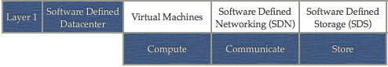
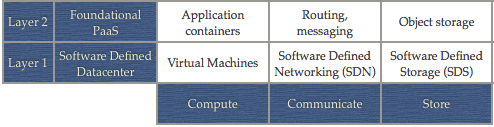
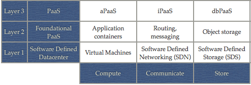
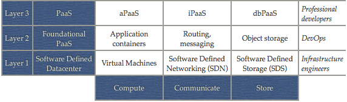
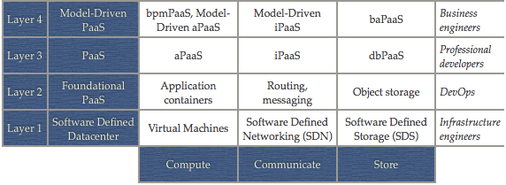
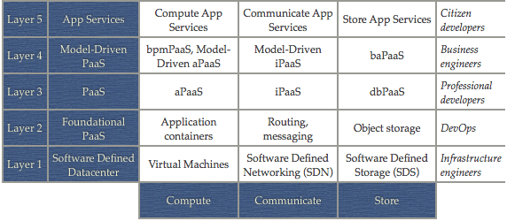

The cloud landscape described, categorized, and compared
“I work for a PaaS company” I answered him. “Ah, okay, great”, and he moved to another subject. It was a cold winter day on a hipster cloud conference. He wasn’t the only one that directly knew what my company did. Most people there knew the difference between Infrastructure-as-a-Service (IaaS), Platform-as-a-Service (PaaS), and Software-as-a-Service (SaaS) and therefore knew exactly what a PaaS company did, right?
Well, not exactly… Nowadays, it’s almost as broad as saying “I work for a software company”. What is your point of reference when you hear the term PaaS? Heroku? Google App Engine? Force.com? Mendix? I think the popular wisdom that cloud comes in three flavors (IaaS, PaaS, SaaS) is not providing a realistic picture of the current landscape. The lines between these categories are blurring and within these categories there are numerous subcategories that describe a whole range of different approaches. I think it’s time to have a closer look at the cloud landscape, to really understand what IaaS, PaaS, and SaaS are (and are not), and distinguish the different categories within. I would like to propose a framework to categorize the different approaches seen on the market today.
Let’s start by taking a look at what’s needed to run an application in “the cloud”. I will start with the hardware and move up the stack until we end up with the actual applications. The end result is a framework with 3 columns and 6 layers as depicted in image 1.
Image 1 – A framework to categorize and compare cloud platforms
In this article I will explain this framework. I will also explain how I constructed this framework, give some example technologies/solutions for each cell of the framework, and show how this framework can be used to compare some of the popular cloud platforms (e.g. OpenStack, AWS, Heroku, CloudFoundry).
Go to the updated and interactive version of this framework
Contents:
- Layer 1: the software-defined datacenter.
- Compute, communicate, and store: the three aspects that come back on each layer.
- Layer 2: deploying applications.
- Layer 3: deploying code.
- Identifying the target user for each layer.
- Layer 4: empowering the business engineer.
- Layer 5: orchestrating pre-defined building blocks.
- Layer 6: using applications.
- Using the framework to compare cloud platforms.
Layer 1: the software-defined datacenter
In the end every application (yes, even “cloud applications” or SaaS) needs to run on physical hardware somewhere in a datacenter. Nowadays most hardware is virtualized. I think it was VMWare who coined the term “Software Defined Datacenter” (SDDC) to indicate that the main hardware elements of a datacenter can be virtualized now: servers, networks, and storage. In a Software Defined Datacenter these elements are all provisioned, configured, and managed by a central software solution.
Server virtualization is the most mature part of a Software Defined Datacenter. Virtualization is not just abstracting the logical view of the servers from the physical hardware that implements them. It is also possible to pool resources of many different servers, thereby creating a virtual layer that offers automatic load balancing and higher levels of availability than the underlying hardware can offer. In principle, commodity hardware can be used as the more advanced management and reliability is taken care of by the virtualization layer. When people talk about “cloud” or “IaaS” they often refer to server virtualization. The best-known examples in the market today probably are the Amazon Elastic Compute Cloud (EC2) and OpenStack Nova. But basically any big IT player has an offering, like Microsoft Windows Azure, Google Compute Engine, and IBM SmartCloud, to name a few.
Network virtualization decouples and isolates virtual networks from the underlying network hardware, in the same way as server virtualization abstracts the underlying physical hardware. The network hardware is only used for the physical link; virtual networks can be created programmatically. These virtual networks offer the same features and guarantees of a physical network, but with the benefits of virtualization like higher utilization of the hardware, more flexibility, and easier management. Network virtualization is often referred to as Software Defined Networking (SDN). The best-known example of SDN probably is Nicira, not in the least because of their $1 billion acquisition by VMWare. OpenStack Neutron (formerly known as Quantum) is also in this space.
It shouldn’t be a surprise that storage can be virtualized too, and that it is referred to as Software Defined Storage (SDS). Storage virtualization means decoupling storage volumes from the underlying physical hardware. This means that more advanced features like caching, snapshotting, high availability, etc. are managed in the software layer (and thus independent from the specific hardware brand). It also means that a lot of optimizations can be done to organize IO in such ways that performance degradation due to server virtualization can be minimized. An example of a storage hypervisor is Virsto (again, acquired by VMWare). Another (different) example is the OpenStack Cinder project that provides block storage and integrates with a range of storage vendors.

Image 2 – The Software Defined Datacenter
What you see in practice of all this software-defined hardware are the APIs provided by cloud-players that give the ability to provision virtual servers, virtual networks, and all kinds of storage volumes.
Until now I referred to this layer as the Software Defined Datacenter. I knowingly avoided the term Infrastructure-as-a-Service (IaaS) as this often includes more than just virtualization (depending on who you talk to), but also often includes less as most IaaS products are mainly focused on server virtualization and offer less functionality in the networking and storage space. Oh, and when we’re at it, let’s just use numbers to indicate the layers to avoid confusion with all kinds of buzzwords. This layer, the software defined datacenter or “virtual hardware”, will be layer 1 (I leave the 0 to the hardware).
Compute, communicate, and store: the three aspects that come back on each layer
Before we move on to describing layer 2, I want to do a small sidestep and research if we can use the distinction (compute, networking, storage) we saw in the previous section for the other layers as well.
These layers are all built on top of the previously described virtualization layer and, of course, consist of software. If we look at software, and especially the object-oriented paradigm, we can make a distinction between the 3 main aspects of software: state, behavior, and messages (or data, methods, and messages, if you will). This beautifully aligns with the previous distinction between storage (vs. state), compute (vs. behavior), and networking (vs. messages).
The same distinction can be made if you look at the different types of middleware. There is middleware that focuses on facilitating compute, like application servers, process and rule engines, etc. There is also middleware that is mainly focused on facilitating communication, like enterprise service buses (ESBs), messages queues, etc. And finally we have all kinds of middleware that facilitate the storage of data, like database management systems in all their flavors (ranging from relational to document- and key/value-oriented storage).
Even for us humans (I expect you to be a human, dear reader) we can distinguish these 3 aspects of operating with data: we store data (e.g. memorizing it, writing it down), we process data (e.g. combine, compute), and we communicate data (e.g. speak, write).
So, without further ado, I will use three columns in my layered framework: compute, communicate, and store. We will see that they help a lot in clarifying the technology stack on each layer.
Layer 2: deploying applications
Let’s go back to describing the layers that are needed to run an application in the “cloud”. We started by describing the first layer: virtual hardware. On the second layer the focus switches from infrastructure-centric to application-centric. Let’s see what that means for each of the three columns: compute, communicate, and store.
For compute this means that we do not talk about virtual machines anymore, but application containers. An application container is an isolated, self-described, infrastructure-agnostic container for running apps. Usually running an app means compiling the code and bundling it with the necessary runtime, like Java code and a Java Virtual Machine (optionally with additional middleware like Tomcat and/or Spring). The resulting package can be deployed in the app container. Docker is a nice example of such an app container. Other examples are what Heroku calls a Dyno, CloudFoundry Warden, and the most recent one by Google: lmctfy (it seems that creating and open sourcing your own application container is the new hip).
The communicate part of layer 2 focuses on routing messages among app containers, storage systems, and external systems. This includes routing, queuing, and scheduling system instructions for e.g. app lifecycle management (e.g. the messaging / NATS component of CloudFoundry). It also includes the smart routing and load-balancing of incoming requests to application instances (e.g. the Heroku routing layer or the CloudFoundry router).
Lastly, the store part of layer 2 isn’t about block storage anymore but provides object storage. This means you don’t have to bother about mounting, partitioning, and formatting virtual disks, you can just store and retrieve objects via an HTTP API. Examples of object storage are Amazon S3, OpenStack Swift, and Ceph Storage.

Image 3 – Foundational PaaS
With these 3 elements: a place to run applications, communication to and from these places, and a way to store objects, all with additional features like high-availability and horizontal scalability, we have an additional layer on top of (virtual) infrastructure that provides a higher level of abstraction and automation. I would like to call this layer “foundational PaaS” to distinguish it from the higher-level PaaS approaches we will discuss in the next section.
Layer 3: deploying code
While layer 2 is focused on application infrastructure, layer 3 shifts the focus to code. In other words: layer 2 has binaries as input, layer 3 has code as input. With “code” I mean a bunch of text that describes an application in a certain programming language, integration configurations, or database configurations. Let’s have a more in-depth look at these elements while we discuss the three columns of the framework again.
For compute we do have language runtimes on top of the application container. This means you can deploy e.g. Java code to such an environment, the Java Virtual Machine (JVM) and other runtime packages are already available as a service. You could see this as an application server as a service. This is mostly referred to as aPaaS (application Platform-as-a-Service). Examples are Google App Engine (which allows you to deploy Java, Python, Go, and PHP) and Heroku Buildpacks. The buildpack mechanism basically works on top of a layer 2 application container but automatically finds the right runtime if you upload code and compiles it into a binary that can be deployed into an application container. CloudFoundry borrows the same mechanism from Heroku.
In the communicate column we see what is called iPaaS (integration Platform-as-a-Service). An iPaaS provides the communication among applications whether it is in the cloud or on-premise. This communication is defined using integration flows. An iPaaS could be seen as an ESB (Enterprise Service Bus) in the cloud and contains features like routing, transformations, queuing, and in most cases a range of pre-defined adapters. Examples of iPaaS are TIBCO Cloud Bus, WS02 StratosLive and Windows Azure BizTalk Services.
We also see a higher level of abstraction in the store column. It probably isn’t a surprise that we talk about dbPaaS (database Platform-as-a-Service) here. dbPaaS basically is a database delivered as a service, including things like availability and scalability, in most cases in a multi-tenant setup. These services are not limited to relational ones, but include key-value and column-oriented datastores. Amazon provides a range of database services: SimpleDB, DynamoDB, Relational Database Service, and RedShift. Other examples are Heroku Postgres, Windows Azure SQL Database, and Salesforce Database.com.

Image 4 – Platform-as-a-Service
Please note that the “cells” in the framework do not by definition use the cells on the lower layer in the same column. A database for example runs in a container (compute column, one layer down), and uses block storage (not object storage). A layer up in the same column just means that the abstraction and automation increases in such a way that you do not have to deal with issues on the lower layers yourself.
We could stop at this layer as the three layers we described until now, give a clear picture of the biggest part of the current PaaS market. However, as you may suspect from my previous ramblings about productivity and higher abstraction levels I would like to explore additional layers. These layers appear to bring surprising advantages.
Identifying the target user for each layer
Until now we talked about the focus of each layer (e.g. infrastructure-centric vs. app-centric) and type of things you can do on each layer (e.g. deploying binaries vs. deploying code). To clarify the distinction between layer 4 and the previous layers we need to look at it from a different angle. Layer 4 mainly distinguishes itself from layer 3 in the type of user that is targeted.
If we look back at the previous layers we clearly see how they are targeting different types of users. Layer 1 (the virtual hardware) is used by infrastructure engineers and/or system administrators. They need to have deep knowledge of the different infrastructure elements and how to combine them to create a resilient and performing infrastructure layer. Layer 2 targets DevOps teams as the focus is on application deployment and how to automate all the operations around it. These teams work with code and application binaries and select and configure the needed infrastructure services. Layer 3 clearly targets professional developers. They work with code and configurations and can deploy that to a ready-made environment without the need to focus on the operations or infrastructure side of things.

Image 5 – Adding the target user for each layer
Layer 4: empowering the business engineer
Layer 4 is focused on the same kind of artifacts as layer 3, but the specifications and configurations are at a higher abstraction level. Layer 4 aims at non-professional developers, i.e. people that don’t program for a living, and enables them to build applications, to connect systems, or to manage data. I tend to call these people “business engineers” as this term emphasizes that these people are not professional developers (i.e. they are “business” people) while the term also tells us that there need to be some sort of affinity with technology (i.e. they are “engineers”). It might be easier to define these people with some examples: the users of business process tools, the users that configure business rules engines, people that configure reporting and analytic tools, people that define applications using high-level models, etc. Technologies and solutions in layer 4 are able to empower these business engineers by focusing on two things: abstracting away from technical details and a focus on easy to learn languages.
The definition of this layer can look a bit artificial at first sight because the users of layer 3 and layer 4 deliver the same type of things: applications, integrations, and data definitions. However, you will see that it makes perfect sense to have a different layer because of the clear difference between solutions/technologies on this layer versus the solutions/technologies in layer 3. Additionally, you will see that this layer creates a nice transition between layer 3 and layer 5. Let’s make things concrete by looking at the columns of our framework again.
In the compute column we see language runtimes as a service, just as on layer 3. The difference is in the type of languages that are supported. These languages are of a higher abstraction level and are often domain-specific (we call these languages DSLs – Domain-Specific Languages). I would still categorize the solutions and technologies in this column as Application Platform-as-a-Service (aPaaS). It basically is a subset of aPaaS, the subset that is focused on Model-Driven Development (MDD). Examples are workflow or business process management (BPM) tools that are delivered as a service (some people call this bpmPaaS). In this category it will be interesting to keep an eye on Effektif. There are also platforms that cover all aspects of application development (data, UI, logic, integration, etc.) like the Mendix App Platform (full disclosure: I work for Mendix).
Does this mean that tools in this category make professional developers obsolete? In my experience this isn’t the case. First, we will of course need professional developers to develop these tools. Second, professional developers are also needed to work with these tools and focus on the more technical side of things, like integrations, complex algorithms, etc. What I see in practice is mixed teams of business engineers and professional developers in a 3:1 ratio.
In the communicate column we see the same difference as in the compute column. We still talk about iPaaS, but the languages used are aimed at different people. They are DSLs for the integration domain. An example going into this direction is MuleSoft CloudHub that is accompanied with a graphical design environment. However, I think there is much to gain here. IFTTT is a great example of how a focus on simplicity can lead to an easy to use service while still being very powerful. I’m waiting for the first iPaaS to focus on creating an IFTTT like experience, combined with enterprise grade service bus features.
The store column of layer 4 contains tools that focus on making data storage, data retrieval, and data processing accessible for business engineers. Data has never been available is such huge amounts (that’s why people refer to data as big data in most cases nowadays) and it never has been more important to quickly act upon this data. These trends have pushed vendors to have a strong focus on enabling business people to work with their tools. Traditional examples are TIBCO Spotfire and QlikView. With TIBCO Silver Sportfire, TIBCO starts to provide its offering as a service. Other examples are SAP BusinessObjects BI OnDemand and Platfora (basically Hadoop for business users). This category is sometimes referred to as (drum roll please) Business Analytics Platform-as-a-Service (baPaaS).

Image 6 – Model-Driven PaaS
We have seen that most technologies and solutions in this layer make use of models to empower business engineers, most models being graphical. That’s why I prefer to refer to this layer as Model-Driven PaaS. There is only one layer left before we end up with the actual applications. Let’s have a look at what layer 5 entails.
Layer 5: orchestrating pre-defined building blocks
In layer 5 we enter the field between developers and end-users. If we approach layer 5 from a developer perspective we can define it as a layer of out-of-the-box services that can be re-used and orchestrated to become part of a new application. If we approach layer 5 from the end-user perspective we can define it as SaaS extensions or SaaS customizations. We then talk about end-user development or so-called citizen developers. So, to summarize it: layer 5 is about pre-built services that can be configured and composed to extend existing applications or build completely new ones.
Let’s look at some examples. The best-known example for building SaaS extensions or deep customizations that involve integrations is force.com (for customizing and extending salesforce). Another example is the AppXpress developer platform that let developers extend the GT Nexus platform. The Mendix App Services approach is an example of building and re-using out-of-the-box services (via an App Store) that can be composed into (or used as a basis for) new enterprise applications. The last example I want to mention is MuleSoft, which basically turns any API out there into an app service that can easily be re-used. They have a big number of so-called Anypoint connectors available that give access to third-party services.
The examples mentioned above all provide tools and solutions that cover all three columns of the framework. They are platforms that can be used to develop or connect to any type of customization or service. If we zoom in on the actual service types, we see that the columns of the framework provide a nice way to classify these app services: we can have compute app services (e.g. the Google Prediction API), communicate app services (e.g. the Amazon Simple Email Service), and store app services (e.g. the Dropbox API).

Image 7 – App Services and SaaS extensions
In this layer we clearly moved from developing things from scratch to customizing or re-using existing services. There is only one step left.
Layer 6: using applications
Here we are, finally! We reached layer 6, which finally is about the applications themselves. We do not talk about the columns of our framework anymore on this layer. These applications cover all three columns, as they all need to compute, communicate, and store data.
We call the applications on this layer Software-as-a-Service (SaaS). SaaS is as-a-Service from the user perspective. From the developer/provider perspective SaaS can be built on top of the previously mentioned layers, but if an application for example isn’t built using a PaaS and runs on dedicated hardware, it can still be SaaS. This basically holds for each layer in the framework: it can be, but is not necessarily build on top of the layers below. It is all a matter of choice for the provider what part of their stack they get from another provider as a service and what part of the stack they build themselves.
Now, without further ado, the complete framework:
Image 8 – A framework to categorize and compare cloud platforms
Now that we have the complete framework, we see that the six layers provide a nice continuum between infrastructure and applications. From layer 1 on each layer abstracts further away from technical details until we end up with the applications themselves. I think that this framework gives a much better overview and classification of the current cloud landscape than the often-used simplification of just having IaaS, PaaS, and SaaS.
Using the framework to compare some popular cloud platforms
Besides giving a description of the cloud landscape, the proposed framework can be used to compare cloud platforms. I already mentioned quite a number of examples during the description of each cell of the framework in this article. In addition, I want to take a stab at classifying platforms that cover more than one cell of the framework like OpenStack, Amazon Web Services, Heroku, and CloudFoundry. Please note that these platforms are changing every month, which means that the classifications as presented below can become outdated.
Go to the updated and interactive version of this framework
OpenStack
Amazon Web Services
Notes: AWS offers app services, mainly in the communicate category. The AWS marketplace is not taken into account in this picture.
Update: included AWS Elastic Beanstalk and therefore colored the aPaaS cell too. Elastic Beanstalk provides the ability to deploy code and manage applications. It is infrastructure/VM-oriented though (that’s also what is priced). That’s why I didn’t color the “Application container” cell, as solutions in this cell really abstract away from the infrastructure.
Heroku
Notes: Dyno’s, Buildpacks, Routing layer, and Heroku Postgres. The add-on marketplace is not taken into account in this picture.
CloudFoundry
Notes: Warden, Router, NATS, buildpacks. Services / add-ons are not taken into account in this picture. Note that this picture is focused on the CloudFoundry open source project, vendors providing CF as a service can deliver additional services that cover other cells.
Go to the updated and interactive version of this framework
You can also discuss this article on Hacker News.
23 Comments Added
Join DiscussionExcellent article dissecting the broad PaaS space. I wrote a similar (though shorter) blog post describing how we are segmenting the market with fit-for-purpose offerings:
http://blog.cobia.net/cobiacomm/2013/07/26/enterprise-private-paas-adoption-and-differentiation/
Valuable article. Two things please ?
1.
May I suggest the Layer 0 ?
The actual hardware …
2.
“modelling” is activity external to the cloud. same as “programming”, or data center “monitoring” …it is not part of the cloud it is what one can do indirectly using some cloud services … yes? Analogy: “driving” is not part of a car factory.
Well, what don’t you do to make your chosen way of delivering services seem special?
Let’s do all our customers a service and just stick to the value. The choice between good old fashioned on-premise and Wizardry-as-a-Service don’t matter much if there isn’t innovation and a solid RoI behind it.
Hi DBJ,
1. Agreed. I actually mentioned that in the article: “This layer, the software defined datacenter or “virtual hardwareâ€, will be layer 1 (I leave the 0 to the hardware).” but I didn’t put it in the picture.
2. I agree again. Modeling isn’t part of the cloud. The runtimes / interpreters are part of the cloud though. Heroku provides buildpacks for multiple programming languages, other vendors provide buildpacks / language runtimes for modeling languages (e.g. business process or rule engines).
Hi Dan,
I couldn’t agree more about your plea for a focus on value. In the end that’s what it is all about.
However, in this article I took a bit of a different approach on purpose. I wanted to analyse and categorise the market with the players that I know of. My focus was on technical differences.
For an article with a different focus see http://www.theenterprisearchitect.eu/archive/2012/03/16/will-app-delivery-paas-make-cloud-more-relevant-to-the-business
Excellent article! The comparison of various cloud platforms using your framework is priceless!
[…] is simplifying reality way too much. A couple of months back I proposed a more sophisticated framework to categorize the cloud landscape. In my humble opinion it helps a lot in categorizing and comparing the different offerings in the […]
[…] empowering business engineers to develop apps) and cloud platforms. Building blocks from each cloud layer are needed: Infra-structure-as-a-Service (IaaS), (Foundational) Platform-as-a-Service (PaaS), […]
Very valuable article! Your framework is very helpful: Thanks!
Very usefull information. Have you heard anything about new Salesforce data loader – Skyvia (http://skyvia.com/solutions/salesforce-integration.html)? It has recently released the test beta version and I’d like to hear your opinion about it.
[…] to Alex Popsecu’s NoSql blog, found a well articulated thesis by Johan den Haan, CTO at Mendix. Johan proposes a framework that describes the various layers of cloud platform […]
That’s an insight articles. With the proliferation of application services on the market, it’s difficult to put into perspective the Enterprise Architecture framework (aka building blocks) of how each system interfaces and is inter dependent of each other. This frameworks helped me put everything into perspective.
Really cool article! I used in my master thesis to categorize cloud solutions beyond IaaS, PaaS and SaaS. Thanks!
[…] Platform-as-a-Service (PaaS) is all about abstraction and automation. Abstracting away from underlying technology layers by automation. That’s basically what is happening on each layer of a cloud architecture, from hardware to IaaS, to foundational PaaS, to aPaaS. […]
[…] The PaaS market, which IDC forecasts to be $14 billion by 2017, is less mature than the other two service markets, IaaS and SaaS. The PaaS market can be difficult to define, although Johan den Haan, CTO at Mendix provides a good framework for categorizing cloud platforms including PaaS. […]
[…] lista di prodotti di esempio per ciascun modello. Il suo interessantissimo articolo è disponibile qui, e nel continuo di questo articolo vedremo quelle che sono le caratteristiche principali del suo […]
I really loved these posts!
Where does a python virtual environment for a web service belong (I’m guessing you intend it to be Layer 3?)
What layer do the configuration tools (hardware and software) for a particular layer belong? E.g Would the tools for an Openstack deployment belong in Layer 0.5 or Layer 5? (or somewhere else)
Image 1 is exactly the concept that I’ve been struggling to create on my own.. I’m happy I made my way here.
Hi Remy,
Thanks for your kind words!
A python virtual environment would indeed be layer 3.
Configuration tools are orthogonal on this framework, so they do not fit in a certain cell. Including them would add another dimension to the framework I think.
I miss a classification of DBaaS, which is often referenced (e.g., https://en.wikipedia.org/wiki/Cloud_database). Is it dbPaaS or something different as claimed by https://blogs.oracle.com/realworldcloudplatform/entry/database_as_a_service_and?
I refer to it using dbPaaS (Database Platform-as-a-Service) indeed.
Thank you Johan for the excellent framework you have created & shared. I earlier worked for Cordys and have some fair understanding of PaaS and SaaS. But the detailed model here gives me a lot of insight and clarity, which can be leveraged better with our clients.
Thank you for this excellent insight and consolidation of different characteristics of PaaS. I ended up to this article during my research primarily focusing to find out is there a solution that provides layers 2 to 5. In otherwords, if we user CloudFoundry, do we need Mulesoft for iPaaS or build iPaaS capability using spring framework. Still analyzing, but this provided a good insight on foundation.
Thanks
Naheed